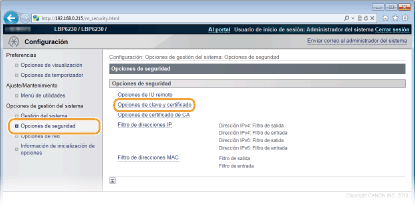
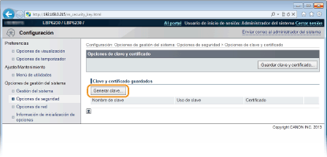
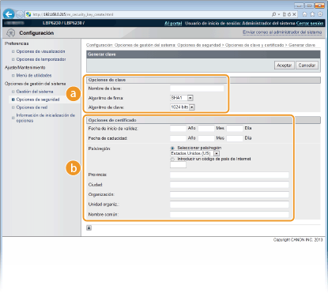

0KXF-032
El par de claves necesario para la comunicación cifrada a través de la Capa de sockets seguros (SSL) puede generarse con el equipo. Puede utilizar SSL para acceder al equipo a través del IU remoto. Pueden registrarse hasta tres pares de claves en el equipo.
1
Inicie el IU remoto e inicie sesión en modo Administrador del Sistema. Inicio del IU remoto
2
Haga clic en [Configuración].

3
Haga clic en [Opciones de seguridad]  [Opciones de clave y certificado].
[Opciones de clave y certificado].

4
Haga clic en [Generar clave].


Para eliminar un par de claves registrado
En la parte derecha del par de claves que desea eliminar, haga clic en [Eliminar] [Aceptar].
Los pares de claves no pueden eliminarse si "SSL" aparece en [Uso de clave], indicando que el par de claves ya se está utilizando. En este caso, desactive SSL o sustituya el par de claves por otro. Ahora ya puede eliminarlo.
5
Especifique las opciones de la clave y el certificado.

 [Opciones de clave]
[Opciones de clave][Nombre de clave]
Introduzca hasta 24 caracteres alfanuméricos para asignar un nombre al par de claves. Defina un nombre que pueda encontrar fácilmente en una lista.
Introduzca hasta 24 caracteres alfanuméricos para asignar un nombre al par de claves. Defina un nombre que pueda encontrar fácilmente en una lista.
[Algoritmo de firma]
Seleccione el algoritmo de firma en la lista desplegable.
Seleccione el algoritmo de firma en la lista desplegable.
[Algoritmo de clave]
El algoritmo utilizado para generar claves es RSA. Seleccione la longitud de la clave en la lista desplegable. Cuanto mayor sea el número de la longitud de la clave, más lenta será la comunicación. Sin embargo, la seguridad será mayor.
[512 bits] no puede seleccionarse para la longitud de clave si [SHA384] o [SHA512] se han seleccionado para [Algoritmo de firma].
El algoritmo utilizado para generar claves es RSA. Seleccione la longitud de la clave en la lista desplegable. Cuanto mayor sea el número de la longitud de la clave, más lenta será la comunicación. Sin embargo, la seguridad será mayor.
[512 bits] no puede seleccionarse para la longitud de clave si [SHA384] o [SHA512] se han seleccionado para [Algoritmo de firma].
 [Opciones de certificado]
[Opciones de certificado][Fecha de inicio de validez]
Introduzca la fecha a partir de la cual el certificado tendrá validez, en formato año/mes/día, en el intervalo que va desde el 1 de enero de 2000 al 31 de diciembre de 2037.
Introduzca la fecha a partir de la cual el certificado tendrá validez, en formato año/mes/día, en el intervalo que va desde el 1 de enero de 2000 al 31 de diciembre de 2037.
[Fecha de caducidad]
Introduzca la fecha a partir de la cual el certificado tendrá validez, en formato año/mes/día, en el intervalo que va desde el 1 de enero de 2000 al 31 de diciembre de 2037. No podrá configurar fechas anteriores a [Fecha de inicio de validez].
Introduzca la fecha a partir de la cual el certificado tendrá validez, en formato año/mes/día, en el intervalo que va desde el 1 de enero de 2000 al 31 de diciembre de 2037. No podrá configurar fechas anteriores a [Fecha de inicio de validez].
[País/región]
Haga clic en el botón de opción [Seleccionar país/región] y seleccione el país/la región en la lista desplegable. También puede hacer clic en el botón de opción [Introducir un código de país de Internet] e introducir un código de país, como "US" para los Estados Unidos.
Haga clic en el botón de opción [Seleccionar país/región] y seleccione el país/la región en la lista desplegable. También puede hacer clic en el botón de opción [Introducir un código de país de Internet] e introducir un código de país, como "US" para los Estados Unidos.
[Provincia]/[Ciudad]
Introduzca hasta 24 caracteres alfanuméricos en la dirección según corresponda.
Introduzca hasta 24 caracteres alfanuméricos en la dirección según corresponda.
[Organización]/[Unidad organiz.]
Introduzca hasta 24 caracteres alfanuméricos en el nombre de la organización según corresponda.
Introduzca hasta 24 caracteres alfanuméricos en el nombre de la organización según corresponda.
[Nombre común]
Introduzca hasta 48 caracteres alfanuméricos en el nombre común del certificado según corresponda. El "Nombre común" suele abreviarse como "CN".
Introduzca hasta 48 caracteres alfanuméricos en el nombre común del certificado según corresponda. El "Nombre común" suele abreviarse como "CN".
6
Haga clic en [Aceptar].
Un par de claves puede tardar entre 10 y 15 minutos en generarse.
Una vez generado el par de claves, se registra automáticamente en el equipo.